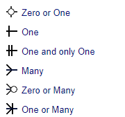

Within database modelling, cardinality defines the number of occurrences of a primary entity associated with the number of occurrences of a foreign entity. The cardinality is represented graphically by the crow's foot symbols at the ends of the connection. There are six commonly accepted relationships symbols:

Below are examples of three main types of cardinality relationships: one-to-one, one-to-many (many-to-one) and many-to-many.
One-to-one cardinality
One example was the CUSTOMER to CONTACT relation shown before under the Primary and Foreign Keys title. Another example would be the car to service ticket relation in a car repair shop:
One-to-many cardinality
An example would be when we keep an authors catalog and we need to show the relation between an author and her/his books:
Many-to-many cardinality
In a different scenario, in a library, we need to establish the relations between the plurality of authors and the plurality of books. In this case we can use an additional join table with two one-to-many relations as follows:
The AUTHORS_BOOKS table contains two foreign keys pointing respectively to the AUTHORS and BOOKS tables. These two foreign keys together act as a composite primary key for the AUTHORS_BOOKS table.